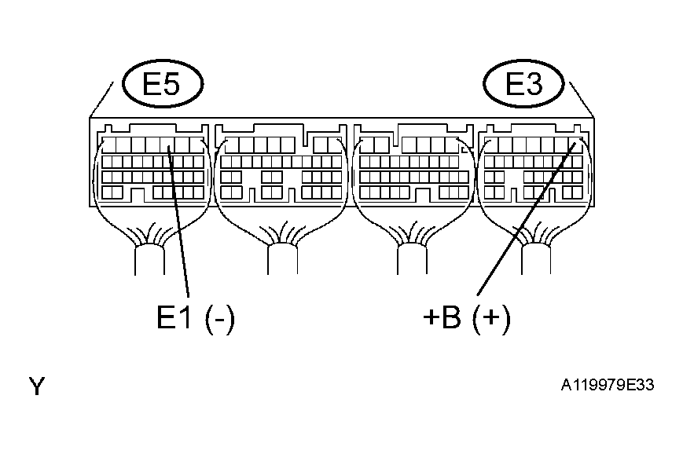
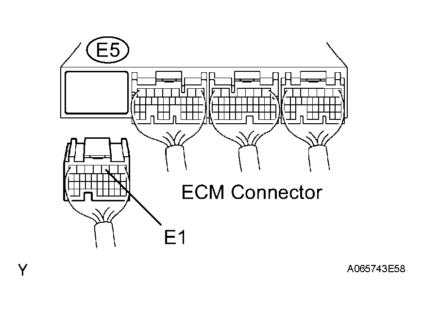
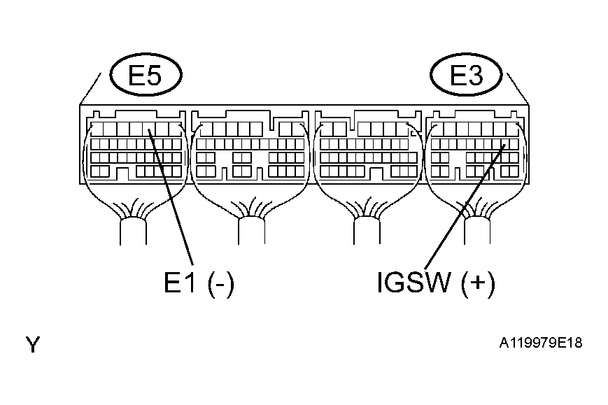
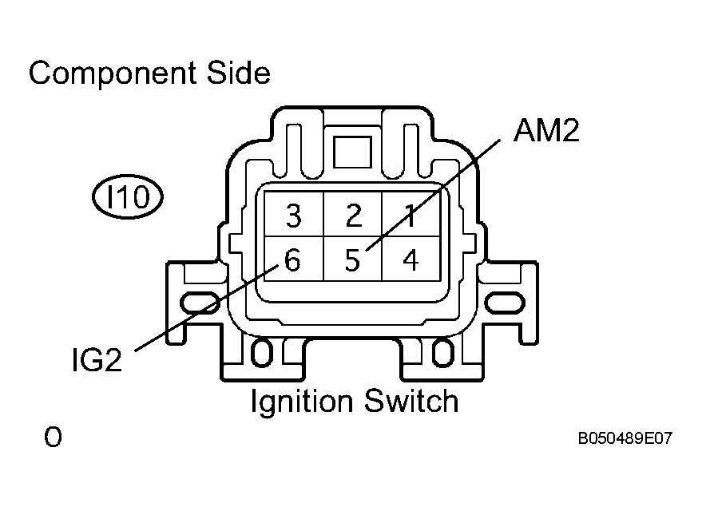
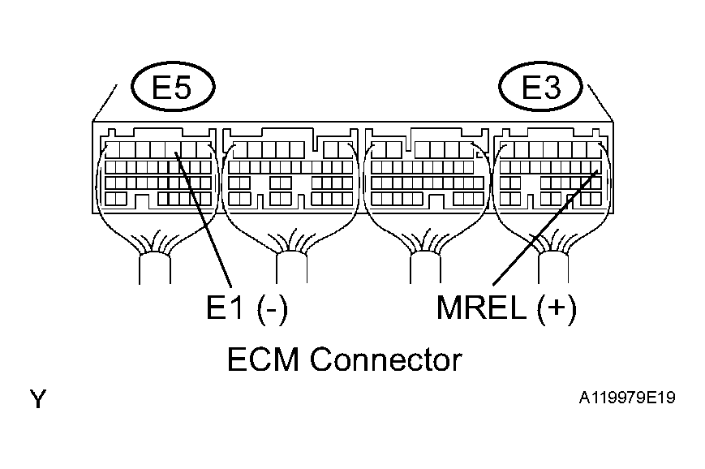
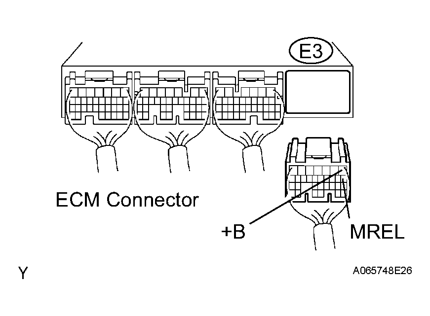

Inspection Procedure
- INSPECT ECM (+B VOLTAGE)
- Turn the ignition switch ON.
- Measure the voltage between the terminals of the ECM connectors.
Standard voltage
TESTER CONNECTION - SPECIFIED CONDITIONSTester Connection Specified Condition +B (E3-1) - E1 (E5-3) 9 to 14 V OK: PROCEED TO NEXT CIRCUIT INSPECTION SHOWN IN PROBLEM SYMPTOMS TABLE

Courtesy of © TOYOTA, LICENSE AGREEMENT TMS1002NG: Go to Next Step
- CHECK HARNESS AND CONNECTOR (ECM - BODY GROUND)
- Disconnect the negative (-) battery cable.
- Disconnect the E5 ECM connector.
- Measure the resistance of the wire harness side connector.
Standard resistance (Check for open)
TESTER CONNECTION - SPECIFIED CONDITIONSTester Connection Specified Condition E1 (E5-3) - Body ground Below 1 Ω NG: REPAIR OR REPLACE HARNESS OR CONNECTOR

Courtesy of © TOYOTA, LICENSE AGREEMENT TMS1002OK: Go to Next Step
- INSPECT ECM (IGSW VOLTAGE)
- Turn the ignition switch ON.
- Measure the voltage of the ECM connectors.
Standard voltage
TESTER CONNECTION - SPECIFIED CONDITIONSTester Connection Specified Condition IGSW (E3-9) - E1 (E5-3) 9 to 14 V OK: Go to step 6

Courtesy of © TOYOTA, LICENSE AGREEMENT TMS1002NG: Go to Next Step
- CHECK FUSE (AM2)
- Remove the AM2 fuse from the engine room relay block.
- Measure the resistance of the AM2 fuse.
Standard resistance: Below 1 Ω
NG: CHECK FOR SHORT IN ALL HARNESSES AND COMPONENTS CONNECTED TO FUSE
OK: Go to Next Step
- INSPECT IGNITION SWITCH ASSEMBLY
- Disconnect the I10 ignition switch connector.
- Measure the resistance of the ignition switch.
Standard resistance
TESTER CONNECTION - SPECIFIED CONDITIONSIgnition Switch Position Tester Connection Specified Condition LOCK All Terminals 10 kΩ or higher ON AM2 (5) - IG2 (6) Below 1 Ω NG: REPLACE IGNITION SWITCH ASSEMBLY

Courtesy of © TOYOTA, LICENSE AGREEMENT TMS1002OK: CHECK HARNESS OR CONNECTOR (BATTERY - IGNITION SWITCH, IGNITION SWITCH - ECM)
- INSPECT ECM (MREL VOLTAGE)
- Turn the ignition switch ON.
- Measure the voltage of the ECM connectors.
Standard voltage
TESTER CONNECTION - SPECIFIED CONDITIONSTester Connection Specified Condition MREL (E3-8) - E1 (E5-3) 9 to 14 V NG: REPLACE ECM

Courtesy of © TOYOTA, LICENSE AGREEMENT TMS1002OK: Go to Next Step
- CHECK FUSE (EFI)
- Remove the EFI fuse from the engine room relay block.
- Measure the resistance of the EFI fuse.
Standard resistance: Below 1 Ω
NG: CHECK FOR SHORT IN ALL HARNESSES AND COMPONENTS CONNECTED TO FUSE
OK: Go to Next Step
- INSPECT EFI RELAY (Marking: EFI)
- Remove the EFI relay from the engine room relay block.
- Measure the resistance of the EFI fuse.
Standard resistance
TESTER CONNECTION - SPECIFIED CONDITIONSTester Connection Specified Condition 3 - 5 10 kΩ or higher 3 - 5 Below 1 Ω (When battery voltage is applied to terminals 1 and 2) NG: REPLACE EFI RELAY
OK: Go to Next Step
- CHECK HARNESS AND CONNECTOR (EFI RELAY - ECM, EFI RELAY - BODY GROUND)
- Check the harness and connector between the EFI relay and ECM.
- Remove the EFI relay from the engine room relay block.
- Disconnect the E3 ECM connector.
- Measure the resistance of the wire harness side connectors.
Standard resistance (Check for open)
TESTER CONNECTION - SPECIFIED CONDITIONSTester Connections Specified Conditions Engine room relay block (EFI relay terminal 2) - MREL (E3-8) Below 1 Ω Engine room relay block (EFI relay terminal 3) - +B (E3-1) Below 1 Ω 
Courtesy of © TOYOTA, LICENSE AGREEMENT TMS1002Standard resistance (Check for short)
TESTER CONNECTION - SPECIFIED CONDITIONSTester Connections Specified Conditions Engine room relay block (EFI relay terminal 2) or MREL (E3-8) - Body ground 10 kΩ or higher Engine room relay block (EFI relay terminal 3) or +B (E3-1) - Body ground 10 kΩ or higher
- Check the harness and connector between the EFI relay and body ground.
NG: REPAIR OR REPLACE HARNESS OR CONNECTOR
OK: CHECK AND REPLACE HARNESS OR CONNECTOR (TERMINAL 5 OF EFI RELAY - BATTERY POSITIVE TERMINAL)
- Check the harness and connector between the EFI relay and ECM.